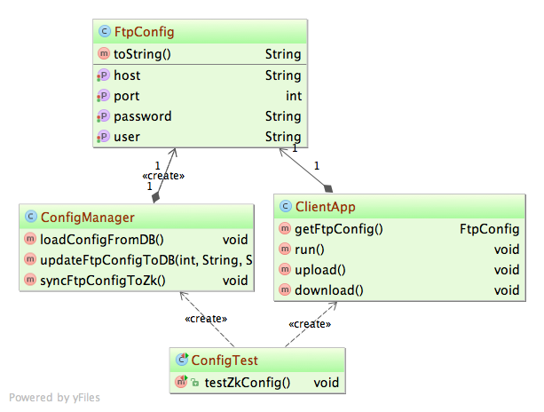

大型应用通常会按业务拆分成一个个业务子系统，这些大大小小的子应用，往往会使用一些公用的资源，比如：需要文件上传、下载时，各子应用都会访问公用的Ftp服务器。如果把Ftp Server的连接IP、端口号、用户名、密码等信息，配置在各子应用中，然后这些子应用再部署到服务器集群中的N台Server上，突然有一天，Ftp服务器要换IP或端口号，那么问题来了？不要紧张，不是问 挖掘机哪家强：），而是如何快速的把这一堆已经在线上运行的子应用，通通换掉相应的配置，而且还不能停机。
要解决这个问题，首先要从思路上做些改变：
1、公用配置不应该分散存放到各应用中，而是应该抽出来，统一存储到一个公用的位置（最容易想到的办法，放在db中，或统一的分布式cache server中，比如Redis，或其它类似的统一存储，比如ZooKeeper中）
2、对这些公用配置的添加、修改，应该有一个统一的配置管理中心应用来处理（这个也好办，做一个web应用来对这些配置做增、删、改、查即可）
3、当公用配置变化时，子应用不需要重新部署（或重新启动），就能使用新的配置参数（比较容易想到的办法有二个：一是发布/订阅模式，子应用主动订阅公用配置的变化情况，二是子应用每次需要取配置时，都实时去取最新配置）
由于配置信息通常不大，比较适合存放在ZooKeeper的Node中。主要处理逻辑的序列图如下：
解释一下：
考虑到所有存储系统中，数据库还是比较成熟可靠的，所以这些配置信息，最终在db中存储一份。
刚开始时，配置管理中心从db中加载公用配置信息，然后同步写入ZK中，然后各子应用从ZK中读取配置，并监听配置的变化（这在ZK中通过Watcher很容易实现）。
如果配置要修改，同样也先在配置管理中心中修改，然后持久化到DB，接下来同步更新到ZK，由于各子应用会监听数据变化，所以ZK中的配置变化，会实时传递到子应用中，子应用当然也无需重启。
示例代码：

这里设计了几个类，以模拟文中开头的场景：
FtpConfig对应FTP Server的公用配置信息，
ConfigManager对应【统一配置中心应用】，里面提供了几个示例方法，包括：从db加载配置，修改db中的配置，将配置同步到ZK
ClientApp对应子系统，同样也提供了几个示例方法，包括获取ZK的配置，文件上传，文件下载，业务方法执行
ConfigTest是单元测试文件，用于集成测试刚才这些类
为了方便，还有一个ZKUtil的小工具类
package yjmyzz.test;
import org.I0Itec.zkclient.ZkClient;
public class ZKUtil {
public static final String FTP_CONFIG_NODE_NAME = "/config/ftp";
public static ZkClient getZkClient() {
return new ZkClient("localhost:2181,localhost:2182,localhost:2183");
}
}package yjmyzz.test;
import java.io.Serializable;
/**
* Created by jimmy on 15/6/27.
*/
public class FtpConfig implements Serializable {
/**
* 端口号
*/
private int port;
/**
* ftp主机名或IP
*/
private String host;
/**
* 连接用户名
*/
private String user;
/**
* 连接密码
*/
private String password;
public FtpConfig() {
}
public FtpConfig(int port, String host, String user, String password) {
this.port = port;
this.host = host;
this.user = user;
this.password = password;
}
public int getPort() {
return port;
}
public void setPort(int port) {
this.port = port;
}
public String getHost() {
return host;
}
public void setHost(String host) {
this.host = host;
}
public String getUser() {
return user;
}
public void setUser(String user) {
this.user = user;
}
public String getPassword() {
return password;
}
public void setPassword(String password) {
this.password = password;
}
public String toString() {
return user + "/" + password + "@" + host + ":" + port;
}
}package yjmyzz.test;
import com.fasterxml.jackson.core.JsonProcessingException;
import org.I0Itec.zkclient.ZkClient;
public class ConfigManager {
private FtpConfig ftpConfig;
/**
* 模拟从db加载初始配置
*/
public void loadConfigFromDB() {
//query config from database
//TODO...
ftpConfig = new FtpConfig(21, "192.168.1.1", "test", "123456");
}
/**
* 模拟更新DB中的配置
*
* @param port
* @param host
* @param user
* @param password
*/
public void updateFtpConfigToDB(int port, String host, String user, String password) {
if (ftpConfig == null) {
ftpConfig = new FtpConfig();
}
ftpConfig.setPort(port);
ftpConfig.setHost(host);
ftpConfig.setUser(user);
ftpConfig.setPassword(password);
//write to db...
//TODO...
}
/**
* 将配置同步到ZK
*/
public void syncFtpConfigToZk() throws JsonProcessingException {
ZkClient zk = ZKUtil.getZkClient();
if (!zk.exists(ZKUtil.FTP_CONFIG_NODE_NAME)) {
zk.createPersistent(ZKUtil.FTP_CONFIG_NODE_NAME, true);
}
zk.writeData(ZKUtil.FTP_CONFIG_NODE_NAME, ftpConfig);
zk.close();
}
}package yjmyzz.test;
import org.I0Itec.zkclient.IZkDataListener;
import org.I0Itec.zkclient.ZkClient;
import java.util.concurrent.TimeUnit;
public class ClientApp {
FtpConfig ftpConfig;
private FtpConfig getFtpConfig() {
if (ftpConfig == null) {
//首次获取时，连接zk取得配置，并监听配置变化
ZkClient zk = ZKUtil.getZkClient();
ftpConfig = (FtpConfig) zk.readData(ZKUtil.FTP_CONFIG_NODE_NAME);
System.out.println("ftpConfig => " + ftpConfig);
zk.subscribeDataChanges(ZKUtil.FTP_CONFIG_NODE_NAME, new IZkDataListener() {
@Override
public void handleDataChange(String s, Object o) throws Exception {
System.out.println("ftpConfig is changed !");
System.out.println("node:" + s);
System.out.println("o:" + o.toString());
ftpConfig = (FtpConfig) o;//重新加载FtpConfig
}
@Override
public void handleDataDeleted(String s) throws Exception {
System.out.println("ftpConfig is deleted !");
System.out.println("node:" + s);
ftpConfig = null;
}
});
}
return ftpConfig;
}
/**
* 模拟程序运行
*
* @throws InterruptedException
*/
public void run() throws InterruptedException {
getFtpConfig();
upload();
download();
}
public void upload() throws InterruptedException {
System.out.println("正在上传文件...");
System.out.println(ftpConfig);
TimeUnit.SECONDS.sleep(10);
System.out.println("文件上传完成...");
}
public void download() throws InterruptedException {
System.out.println("正在下载文件...");
System.out.println(ftpConfig);
TimeUnit.SECONDS.sleep(10);
System.out.println("文件下载完成...");
}
}package yjmyzz.test;
import com.fasterxml.jackson.core.JsonProcessingException;
import org.junit.Test;
/**
* Created by jimmy on 15/6/27.
*/
public class ConfigTest {
@Test
public void testZkConfig() throws JsonProcessingException, InterruptedException {
ConfigManager cfgManager = new ConfigManager();
ClientApp clientApp = new ClientApp();
//模拟【配置管理中心】初始化时，从db加载配置初始参数
cfgManager.loadConfigFromDB();
//然后将配置同步到ZK
cfgManager.syncFtpConfigToZk();
//模拟客户端程序运行
clientApp.run();
//模拟配置修改
cfgManager.updateFtpConfigToDB(23, "10.6.12.34", "newUser", "newPwd");
cfgManager.syncFtpConfigToZk();
//模拟客户端自动感知配置变化
clientApp.run();
}
}输出如下：
ftpConfig => test/123456@192.168.1.1:21
正在上传文件...
test/123456@192.168.1.1:21
文件上传完成...
正在下载文件...
test/123456@192.168.1.1:21
文件下载完成...
...
正在上传文件...
test/123456@192.168.1.1:21
ftpConfig is changed !
node:/config/ftp
o:newUser/newPwd@10.6.12.34:23
文件上传完成...
正在下载文件...
newUser/newPwd@10.6.12.34:23
文件下载完成...
从测试结果看，子应用在不重启的情况下，已经自动感知到了配置的变化，皆大欢喜。最后提一句：明白这个思路后，文中的ZK，其实换成Redis也可以，【统一配置中心】修改配置后，同步到Redis缓存中，然后子应用也不用搞什么监听这么复杂，直接从redis中实时取配置就可以了。具体用ZK还是Redis，这个看个人喜好。